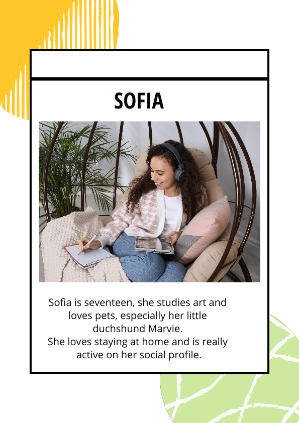

As it emerged from the creative process developed via ideation cards, we have identified two ideal profiles for the users of this initiative: Marco and Sofia. In outlining them, we took into account some specific aspects: gender, age and social factor. Sofia is an high school student, she spend a lot of time on the telephone, like most of the guys and the girls of her generation; in this scenario we imagined an example of functional use of technology, useful to the her learning and her social sharing activity. Marco is Matilda’s father, he wants to be, as much as he can, present in her life choices; he doesn’t want her to be unconfident with technologies, on the contrary he wants her to learn how to use it in responsible and constructive way.
PERSONAS

SCENARIO Sofia